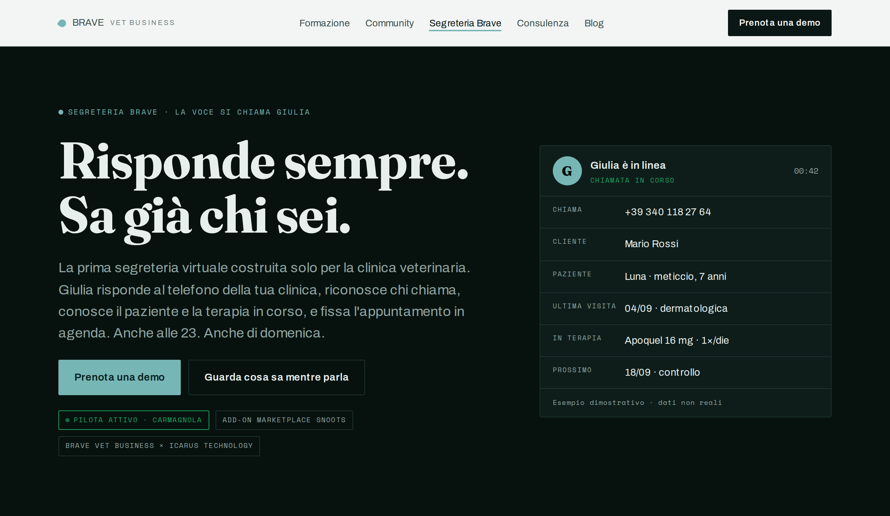
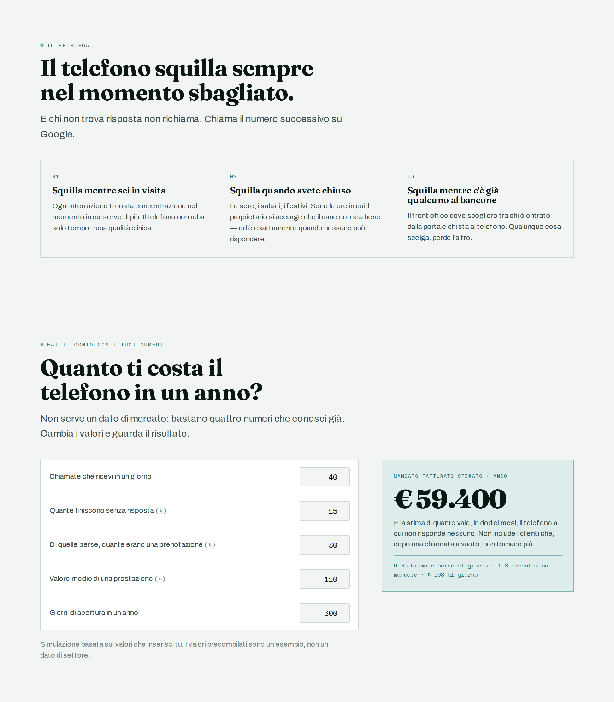
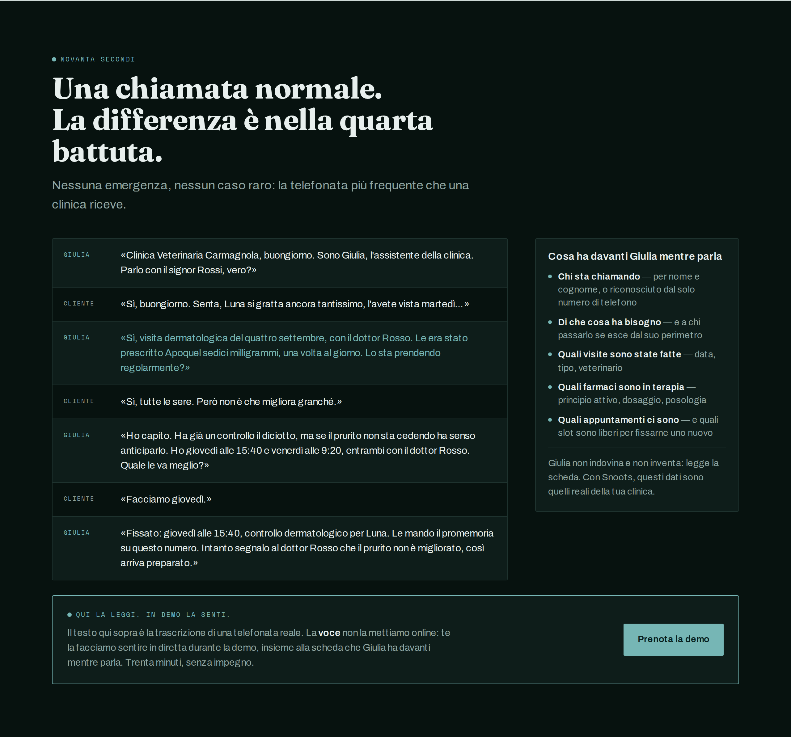
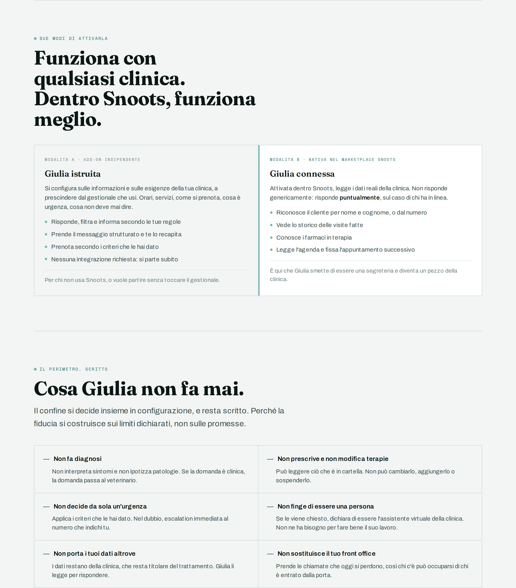
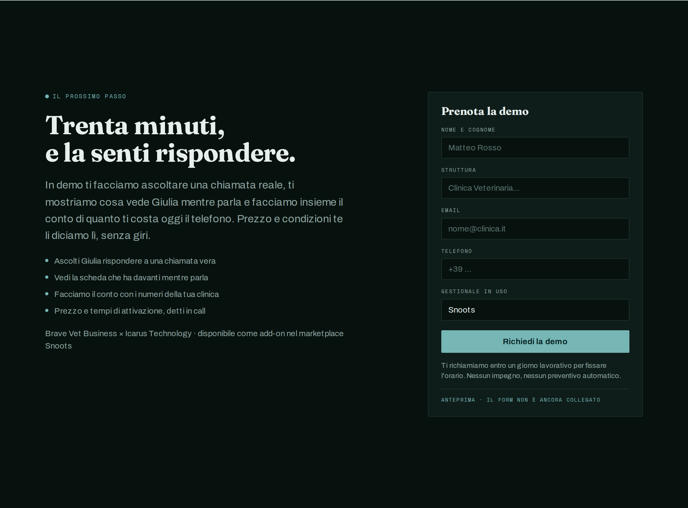

Non è una brochure e non è una vetrina. È il sistema di lead generation del prodotto: ogni blocco che segue ha un compito nel portare il visitatore al form, e i punti di contatto sono definiti uno per uno. Qui sotto l'impianto e l'anteprima della pagina così com'è oggi.
La regola che governa la pagina: si chiede una volta sola. Tutto il resto dà — un numero, una prova, un limite dichiarato — e serve a far arrivare al form una persona che ha già deciso.
Quello che la pagina non fa: non pubblica il numero di telefono di Giulia. La prova al telefono resta un momento della demo, dove c'è qualcuno che la guida e la commenta. Pubblicarlo significherebbe regalare la dimostrazione senza raccogliere il contatto — e lasciarla avvenire senza controllo, con il rischio che un ascolto fuori contesto diventi il giudizio sul prodotto.
«Gestionale in uso» non è un dato anagrafico: è il campo che dice in quale conversazione entrare, prima ancora di aver parlato con la persona.
Struttura, testi e meccanismi sono definitivi. Il marchio non compare ancora: si applica dopo la scelta, senza toccare l'impianto della pagina.




